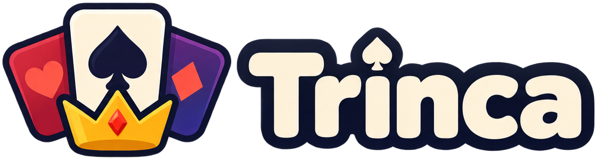
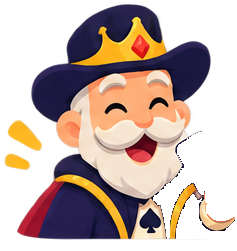
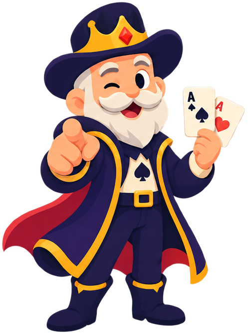

🔥1
🎰0
🃏5/5


com Dom Naipe, seu dealer-professorLições de 3 minutos, com cartas na tela e nenhum termo que você precise decorar. Do baralho ao pré-flop.
Grátis, sem cadastro. Primeira lição: o baralho.
